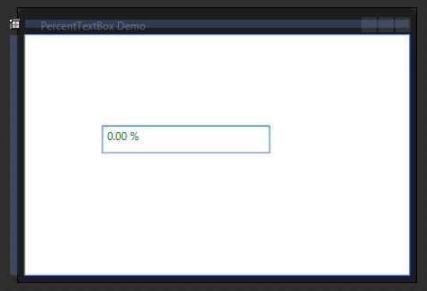
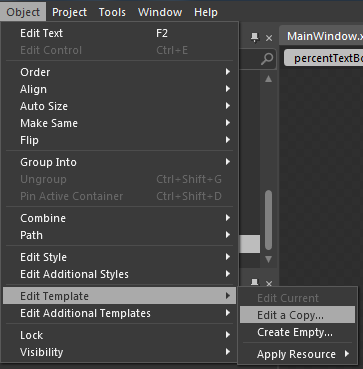
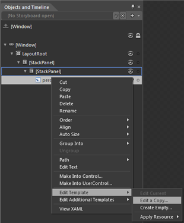
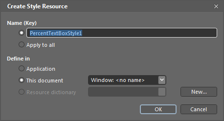
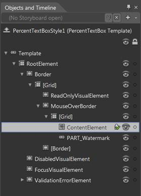
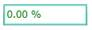

PercentTextBox Template can be edited using Expression Blend in order to get a good look and feel for an application.
This can be accomplished by creating a simple Silverlight application in Blend.
Thendrag and drop PercentTextBox into the application from Assets tab.

Figure 245: Blend – Design View
After creating the PercentTextBox, select it and go to Object -> Edit Style -> Edit a Copy to edit the Template of PercentTextBox.

Figure 246: Blend – Edit Template
There is another way to Edit Template.Right click on PercentTextBox control in Object and Timeline and choose Edit Template option as shown below.

Figure 247: Blend – Edit Template
This will open a dialog box where you can give a name of your style and define exactly where you want to store it.

Figure 248: Blend – Create Style Resource
The above steps include some lines of XAML within your application. This XAML represents the default style for percent PercentTextBox.
|
[XAML]
<syncfusion:PercentTextBox x:Name="percentTextBox" Height="25" Width="150" CornerRadius="2" Style="{StaticResource PercentTextBoxStyle1}"/> |
All template items can are now found in the Objects and Timeline window. Now you can customize each part in template.

Figure 249: Blend – Objects and Timeline
Here is the code to modify the Mouse over state of the PercentTextBox.
|
[XAML]
<VisualState x:Name="MouseOver"> <Storyboard> <ColorAnimationUsingKeyFrames Storyboard.TargetProperty="(Border.BorderBrush).(SolidColorBrush.Color)" Storyboard.TargetName="MouseOverBorder"> <SplineColorKeyFrame KeyTime="0" Value="#FF22DCB9"/> </ColorAnimationUsingKeyFrames> </Storyboard> </VisualState> |

Figure 250: PercentTextBox